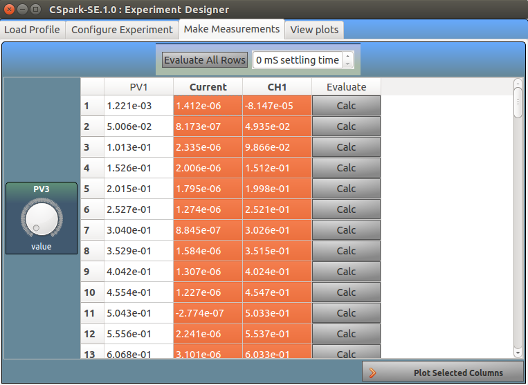
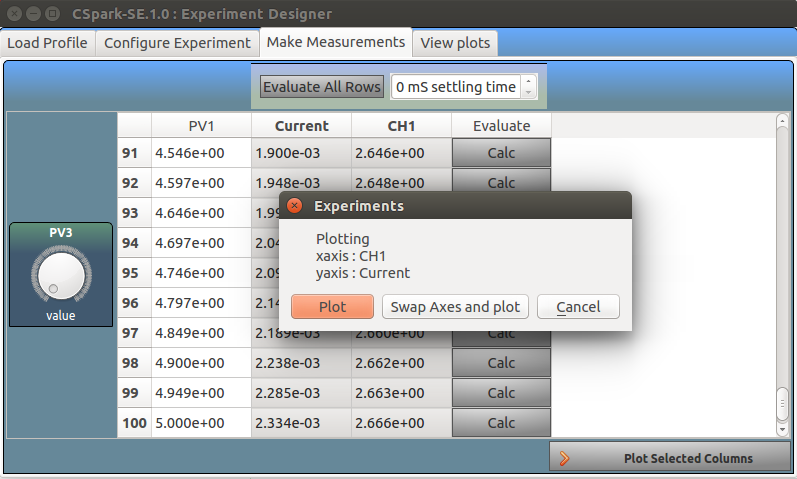
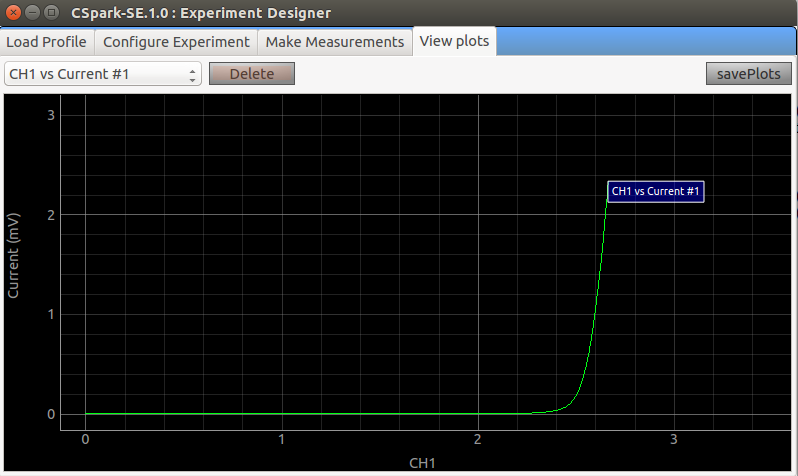
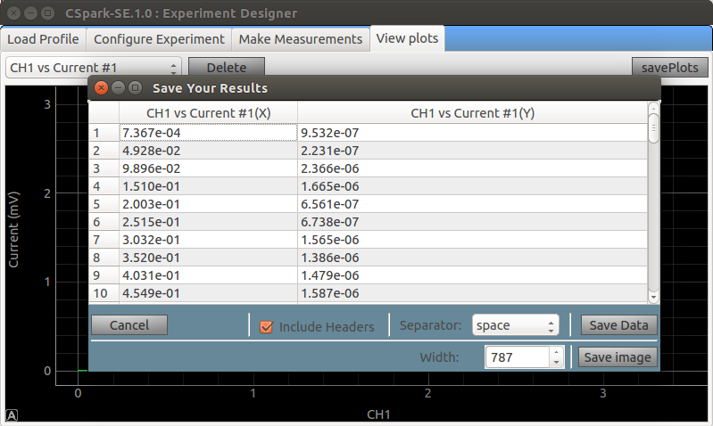

Experiment Designer

Experiment Designer allows you to define the control and readback sequences of parameters and execute them, explained below
using Transistor CE characteristics as an example.
To plot Vc vs Ic, we need to:
1. Select a base current by setting the value of PV2.
2. Sweep PV1 from 0 to 5V in steps and read CH1 (Vc) in each step.
3. Calculate Ic by the equation (PV1 - CH1)/Rc
4. Plot CH1 vs Ic
Step 1: Select PV2 for manual control and PV1 for sweep as shown below.
Add a derived parameter for Ic using the format I = (PV1() - CH1())/1000, the empty parantheses are
necessary in the equation.
Screenshot

Screenshot

Screenshot

Screenshot

Screenshot
